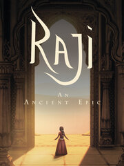

Raji: An Ancient Epic
Raji: An Ancient Epic
Detalles
|  | |
| Tiempo de juego | 5h 48m 0s |
| Última actividad | 16/07/2021 19:25:00 |
| Añadido | 23/07/2021 17:30:27 |
| Modificado | Nunca |
| Estado de finalización | Jugado |
| Librería | Steam |
| Fuente | Steam |
| Plataforma | PC (Windows) |
| Fecha de lanzamiento | 15/10/2020 |
| Puntuación de la Comunidad | 85 |
| Puntuación de la Crítica | 70 |
| Puntuación de usuario | |
| Género | Action Adventure Indie |
| Desarrollador | Nodding Heads Games |
| Editor | Super.com |
| Característica | Achievements Cloud Saves Full Controller Support Single Player |
| Enlaces | Community Hub Discussions Guides News Store Page PCGamingWiki Achievements |
| Tag | |
Descripción


The story of Raji: An Ancient Epic begins with the start of a new war between the demons and the gods. Seeking to avenge their defeat in the last great war from a thousand years ago, the demons have challenged the gods who humiliated them and have invaded the human realm, threatening them with extinction.
Thinking that their enemies had been utterly defeated in the last great war, a thousand years ago, the humans had fallen into a false sense of security, forgetting the ways of alchemy, while enjoying the peace. Unable to defend themselves, cities and fortresses fell, leaving the humans at the mercy of the demons.
Amidst the chaos, as cities and fortresses fell, and as young children were abducted from their homes, a young girl named Raji is chosen by the gods to be the sole defender of the human race.

A Story of Siblings
Experience a story of siblings. Raji and Golu are sister and brother who have been separated by the attacking demonic hordes and now find themselves in the middle of the great war.Raji has taken it upon herself to find her brother and put an end to this reckless war. However, this can only happen if she manages to break down the might and stratagem devised by the great lord of demons, Mahabalasura.

Stunning Artwork
Inspired by Indian mythologies such as Mahabharata and Ramayana, and by the medieval architecture of Rajasthan, Raji: An Ancient Epic brings a refreshing new style to the action-adventure scene!Every corner of the game’s environment is drawn in the Pahari art style and combines hand-painted textures, rendered in 3D giving the Raji: An Ancient Epic a stunning and unique visual quality rarely seen in games.

Tactical Combat
Diverse weapons and powers, gifted to Raji by the gods, are at your disposal. Mastering them all will be vital to your success as the demonic hordes will skillfully adapt to each and every situation; while the Trishul may be perfect for one battle, the mighty Sharanga bow may be needed for the next.
A Universe Set in Ancient India
For the very first time, experience a game set in ancient India and infused with Hindu and Balinese mythology. You will find yourself immersed in ancient India where every corner is begging to be explored.From enchanting stories from the lore of the game to tightly packed battles against ferocious demons and bosses, ancient puzzles, massive forts and palaces, experience a sibling story who find themselves at the center of a divine war.